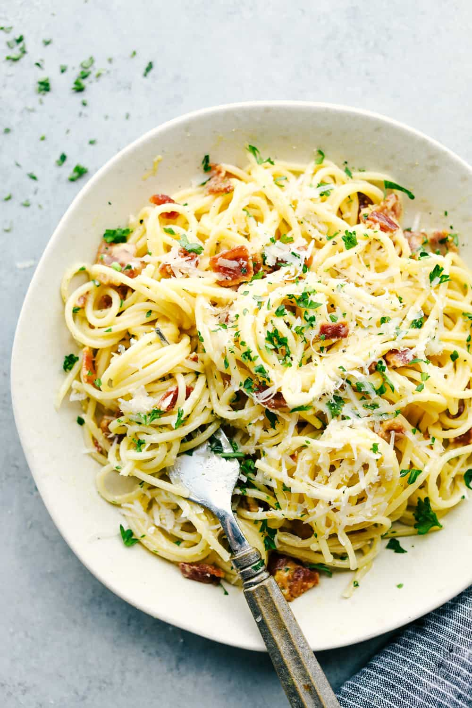

Carbonara is an Italian pasta dish from Rome made with egg, hard cheese, guanciale, and black pepper. I finally found a carbonara recipe that I love. The sauce is so creamy, cheesy, and so good. The best part is that the pickiest eater gobbled this down, and my other boy had seconds! It was pretty easy to throw the whole thing together. I felt like it was the perfect Sunday meal served with a side salad and garlic bread! This is the dish if you want a quick and easy delicious meal in just minutes. This creamy bacon carbonara only takes 30 minutes from start to finish!
It is simply delicious and so easy to make at home. Everyone will be raving over this incredible creamy pasta! I know many people are worried about the sauce breaking because of the egg. It was easier than I thought! Just go low and slow. It will totally work out! Once you try this recipe, you'll want to try this easy pasta carbonara too. It's delish!